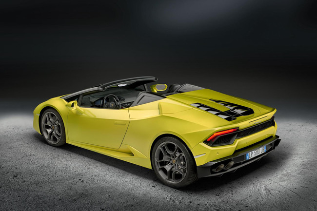
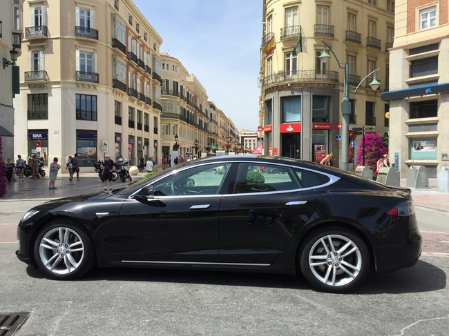
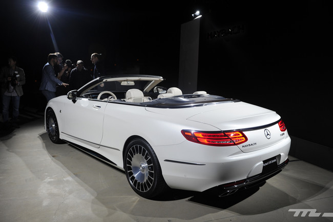
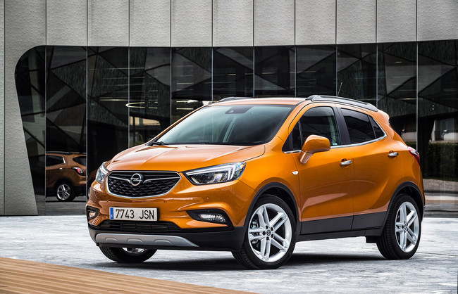

¡Una máquina de derrapar! El Lamborghini Huracán Spyder se atreve al todo atrás

Otra de las novedades del Salón de Los Ángeles es el nuevo Lamborghini Huracán Spyder con tracción trasera. Esta versión más pura que el Spyder de tracción a las cuatro ruedas que conocíamos hasta ahora, también estrena un frontal y una trasera con diseño renovado, para diferenciarlo del modelo de tracción integral.
Igual que hicieron con el Huracán Coupé, el Spyder promete sensaciones fuertes aptas solo para manos expertas. Motor V10 atmosférico de 580 caballos y una aceleración de 0 a 100 km/h en solo 3,6 segundos, mientras que la velocidad máxima que alcanza es de 319 km/h. Con un peso de solo 1.509 kg (1.389 kg el Coupé), consigue una relación peso/potencia de 2.6 kg/cv.
¿Quieres montar en un Tesla Model S 70D? Ahora es más fácil de lo que imaginas

Los vehículos de la marca Tesla son los todavía grandes desconocidos para la mayoría de los españoles. Salvo que te encuentres con alguna de las unidades particulares que circulan por nuestro país, será difícil que puedas ver uno, al menos hasta que la marca norteamericana propiedad de Elon Musk termine de asentarse definitivamente en nuestro país.
Pero ahora, gracias a una iniciativa puesta en marcha por Cabify bajo el nombre de ‘Tesla on the Road’, podrás viajar con chófer en todo un Tesla Model S 70D por las calles de Madrid. El coche estará disponible entre los días 16 al 30 de noviembre y lo mejor de todo es que estará al mismo precio que la gama Lite, la más económica de la compañía.
Mercedes-Maybach S 650 Cabrio, en exclusiva desde Los Ángeles: sólo 300 unidades y 300.000 euros

Unas horas antes de que abra sus puertas el Salón del Automóvil de Los Ángeles, la submarca de lujo de Daimler Mercedes-Maybach muestra su primer descapotable, el Mercedes-Maybach S 650 Cabrio. La firma adelanta que será un modelo muy exclusivo, con una producción de únicamente 300 unidades y un precio de unos 300.000 euros antes de impuestos. Llegará al mercado a principios de 2017 pero nosotros lo acabamos de ver en vivo en California.
Como su nombre indica, este S 650 Cabrio está basado precisamente en el Clase S Cabriolet (toma de contacto), aunque luce un aspecto específico protagonizado por paragolpes en diseño propio, diversos detalles cromados, distintivos Maybach, luz de bienvenida que proyecta el logotipo de la marca en el suelo o llantas forjadas Maybach, bicolor y de 20 pulgadas.
¿Qué esconde la X de los nuevos SUV de Opel? Probamos el nuevo Mokka X para descubrirlo

Asistimos a la presentación nacional del nuevo Opel Mokka X, un coche de éxito para la marca del rayo y con el que pretende mantenerse entre los más vendidos del segmento B-SUV. La primera generación se lanzó en el año 2012 y tuvo una muy buena aceptación en un segmento que ha experimentado un crecimiento exponencial y al que parece que le queda mucho recorrido.
En 2016 el Opel Mokka ha registrado un 14% de cuota de mercado dentro del segmento B-SUV, lo cual es más que relevante teniendo en cuenta que se trata de un modelo con cuatro años de vida y que lucha con modelos muy variados y, en muchos casos, más baratos.